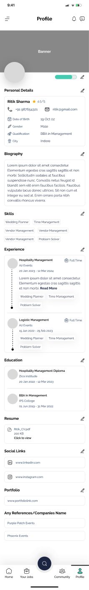
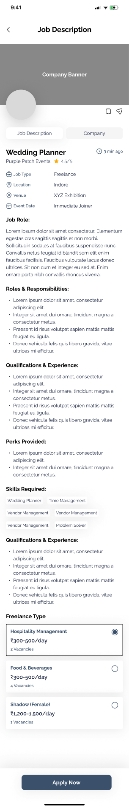
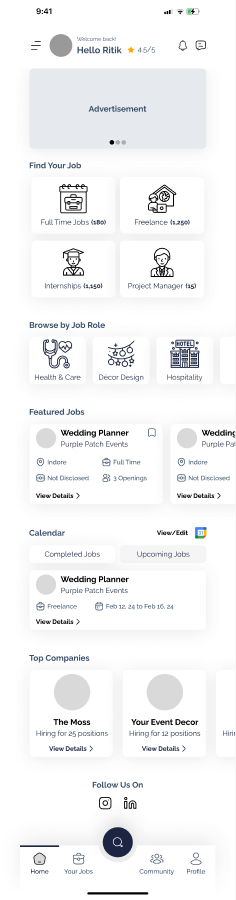
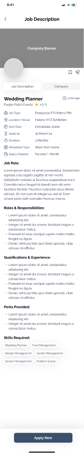

Mostly Events connects freelancers to work in the events industry — weddings, décor, hospitality, F&B. I owned the job-seeker experience end to end: gathering requirements with the product team, designing every screen, and running usability tests. The core problem: a single event needs a whole crew at different day-rates, and no job board is built for that.



A wedding needs a planner, a decorator, servers and a photographer — usually for a single day, often hired separately.
I looked at how Naukri, Indeed and similar boards handle this. They all share one assumption: one listing = one role, one salary, one Apply button. That works for full-time hiring. It breaks for event gig work, where the same event post has to advertise several roles at several rates, and a freelancer needs to know their odds for their role — not the listing as a whole.
Full-time hiring flows don't fit gig work. A wedding-day server and a full-time hospitality manager have completely different needs — day-rate vs. salary, one-off vs. ongoing, verify-in-a-day vs. a formal process. Forcing both down the same funnel serves neither.
Give freelance listings the structure full-time listings don't need — multiple sub-roles per event, each with its own rate and vacancy count — while keeping full-time roles on the familiar apply-directly path.
I started by mapping requirements with the product team, then pulled apart the incumbents — Naukri, Indeed, WorkIndia and a few gig apps — to see what they optimise for and where event work falls through the cracks. Three findings shaped everything that followed.
Gig workers weigh a different set — day rate, how many vacancies, distance, and how quickly they'll be paid. The listing has to surface those, not a monthly CTC.
Event freelancers work company-to-company with no single employer history. A standard résumé form has no slot for how they actually work — so the profile needed rethinking, not restyling.
Booking a stranger for a wedding day is a leap for an employer. Verification has to be a quick, visible signal — not a form long enough to stall someone picking up last-minute work.
So the job-seeker side had to get three things right: role-level clarity on the listing, a profile built for gig work, and low-friction verification.
Job Detail serves both listing types from one layout. For a full-time role it's a standard description and a single Apply button. For a freelance event it adds a Freelance Type section under the same description — each sub-role priced and counted on its own, so a decorator and a server reading the same post see different pay and different competition.

Each sub-role — Hospitality Management, F&B, Shadow — carries its own ₹-per-day range, not one blended rate for the whole listing.
“2 Vacancies” for one role, “1 Vacancy” for another — visible before applying, so a candidate can judge their odds for the specific role.
Employers can attach custom pre-apply questions to a listing, surfaced under a “Career Fit Assessment” before submission.
Bookmark and share sit on the detail screen itself — a listing you're not ready to commit to doesn't have to be re-found later.
A full-time role is a direct apply. A freelance role adds one deliberate step — pick which role and rate you're applying for, since one listing can offer several. The branch happens at Job Detail, not before: the same browse and search feeds both, and the paths only diverge once a candidate commits to a specific role.
Event freelancers rarely have a single-employer résumé, so the profile doesn't assume one.
One tap to show you're open for work — the signal employers scan for first.
Each past gig carries role tags (“Wedding Planner”, “Vendor Management”) so a search matches on what you did, not where.
A dedicated portfolio field, plus a “References / Companies” field for names a résumé template has no slot for.
Booking a stranger for a wedding-day shift is a real trust problem. KYC here is deliberately minimal — a photo and an ID upload, each confirmed independently — rather than a long form that would stall someone trying to pick up gig work quickly.
It reads as a checklist: two items, two green ticks, one “Request for Verify”. Enough of a signal for an employer, light enough that a candidate finishes it before they lose interest.
This project is at the wireframe stage — grey placeholder imagery, no final brand colour. That's an honest limitation, not a hidden one. What's already real: the type family, the ink tones, spacing and the component patterns, so visual design can move fast on a settled structure rather than starting from a blank file.
The job-seeker side is live at mostlyevents.com. [Anjali — add one real number here: sign-ups, listings, applications, or employer feedback. Even directional.]
The freelance role-and-rate model is the part I'm proudest of — a small structural change to one screen that lets a single post staff an entire crew, without turning the listing into five listings.
What I'd do next: take the role picker back to more event freelancers to test the rate-comparison moment, then move the whole job-seeker side into high-fidelity alongside the recruiter flow.